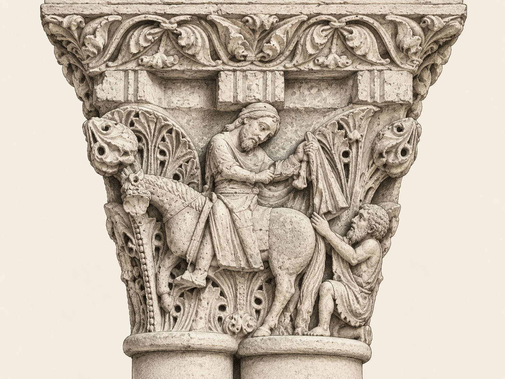
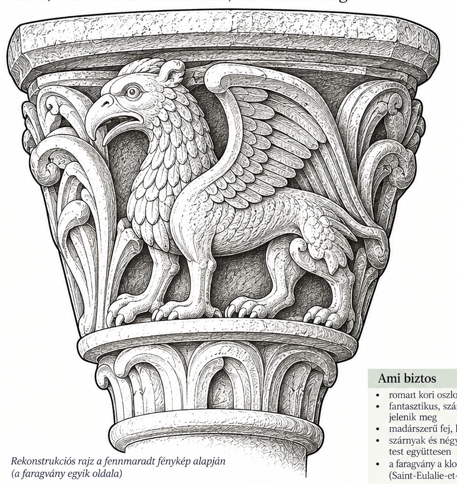
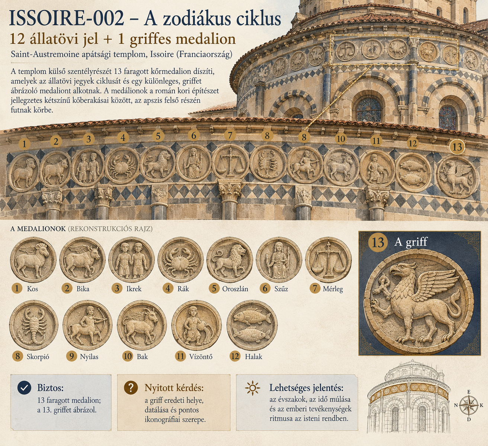

Santa Maria de l’Estany
Román kori kolostor és kerengő. Jelenlegi katalógustételek: 1.
3. bővítés · publikálási változat
Szeretetből és kíváncsiságból készülő hobbi- és tanulóprojekt a román kori templomokról, faragványokról és a hozzájuk kapcsolódó történetekről. A katalógus folyamatosan bővül, javul és pontosodik.

Helyszínek
Egy helyszínhez tetszőleges számú faragvány rendelhető. A bizonytalan azonosításokat nem rejtjük el: kérdőjellel és több lehetséges értelmezéssel dokumentáljuk.
Román kori kolostor és kerengő. Jelenlegi katalógustételek: 1.
Késő román kori kerengő, kb. 1180–1204. Jelenlegi katalógustételek: 2.
Korai középkori eredetű bazilika román kori faragványokkal. Jelenlegi katalógustételek: 1.
Első teljes mintatemplomunk: történet, szentek, kerengő, faragvány, síremlékek és élő hagyomány.
Templomoldal megnyitása →A 3. bővítés mintatemploma: szentkultusz, Passió–Feltámadás ciklus, zodiákus és névtörténet. Katalógustételek: 2.
Templomoldal megnyitása →A román és korai gótikus monumentális szobrászat kulcshelyszíne. Jelenlegi katalógustételek: 1.
Pireneusi román templom karcsú harangtoronnyal. Jelenlegi katalógustételek: 1.
Múzeumban őrzött, eredeti építészeti környezetéből kiemelt román kori oszlopfő. Jelenlegi katalógustételek: 1.
Román kori kapuzat gazdag figurális és fantasztikus díszítéssel. Jelenlegi katalógustételek: 1.
Gyűjtemény
Solymász, vadászkutyák és nyúl egy román kori oszlopfőn.
Az amiens-i legenda jelenete a tudelai kerengőből.
A Lukács-evangélium példázatának lakomajelenete.

Griff-szerű, madár- és négylábú jegyeket vegyítő lény az elne-i kerengőből.
Részletes templomoldal →A szentély Passió–Feltámadás ciklusának egyik kulcsjelenete.
Részletes templomoldal →
Tizenkét állatövi jel és a rejtélyes 13., griffet ábrázoló medalion.
Részletes templomoldal →Monumentális épületszobrászat Chartres román–korai gótikus határvidékéről.
Két eltérő értelmezést őrzünk meg ugyanarról a tudelai faragványról.
Pireneusi templom, karcsú toronnyal és groteszk figurális részletekkel.
Archaikus erejű küzdelemjelenet a Saint-Germain-des-Prés egykori román kori hajójából.
Emberi, állati és hibrid alakok sűrű világa egy dél-franciaországi templom bejáratán.
Olvasnivaló
A katalógus laikus, figyelmes nézőpontból épül. A biztos adatot, a valószínű értelmezést és a hipotézist külön kezeljük. Ha két olvasat is lehetséges, mindkettőt feltüntetjük.
A szirének, griffek, hárpiák és groteszk fejek nem minden esetben ugyanazt jelentik. Lehetnek erkölcsi, bestiáriumi, bajelhárító vagy pusztán ornamentális alakok. A kapu mint határ a szent és a profán tér között különösen fontos értelmezési keret.
A Lukács-evangélium példázata (Lk 16,19–31) a bőség és a nélkülözés drámai szembeállításából indul. A román kori lakomajelenetek ezt a társadalmi és erkölcsi feszültséget néhány tömör képi jelbe sűríthetik.
A TUDELA-002 tételnél két értelmezést őrzünk meg: Júdás árulását és a Szanhedrin tanácskozását. Ez nem hiba, hanem a katalógus módszerének része.
Katalóguselv
Minden új tételt egy helyszínhez rendelünk, egységes rajzi stílusban jelenítünk meg, és részletes leírást kap. A nyilvános oldalon eredeti közösségimédia-fényképet nem használunk. A bizonytalanságot dokumentáljuk, nem takarjuk el.